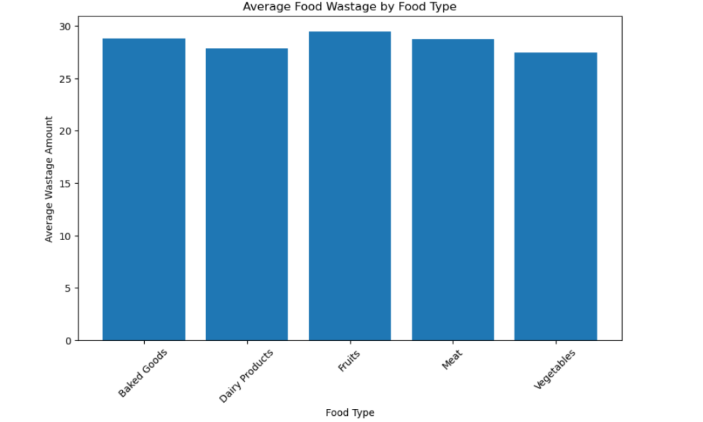
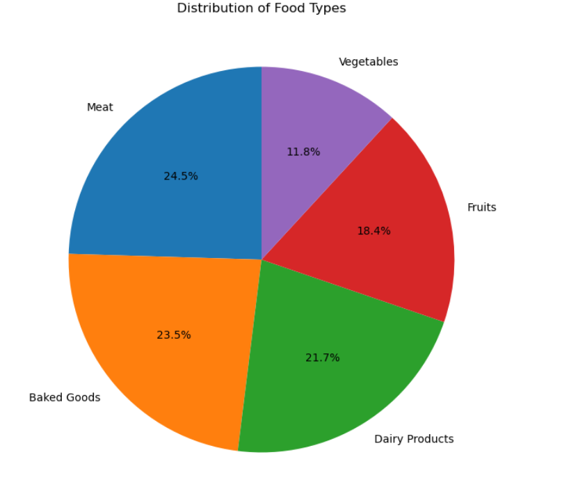
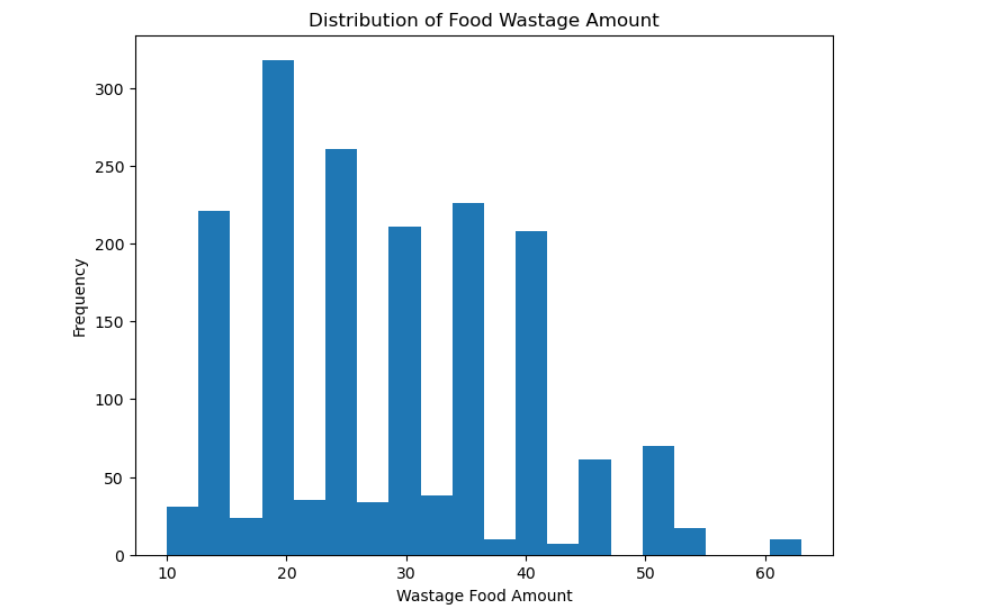
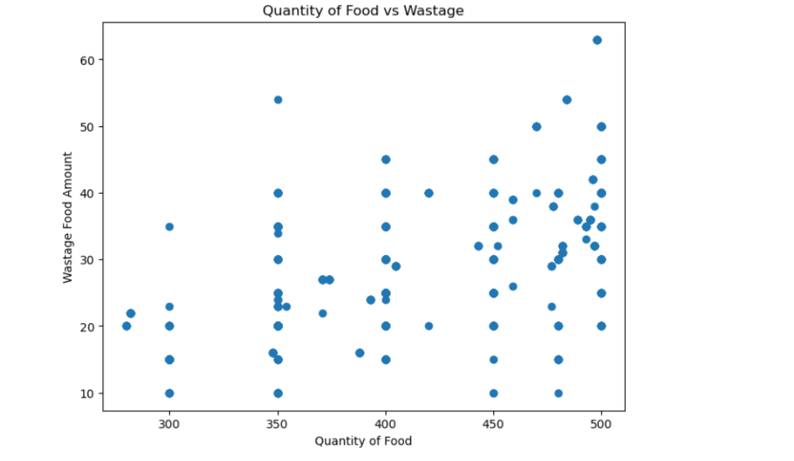
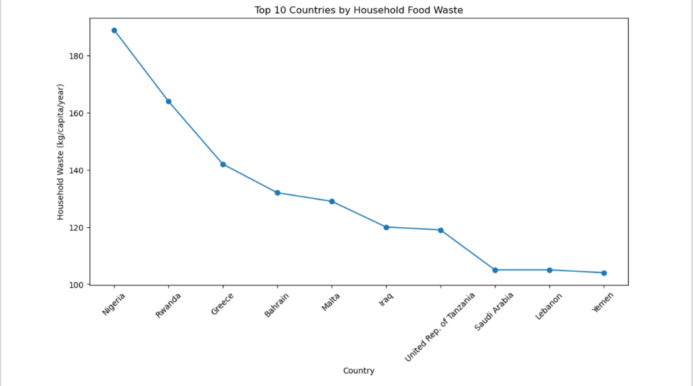

Graphical representation of food waste dataset generated in Jupyter Notebook

Compare average food wastage among different food categories.
This graph identifies which food type contributes the highest average food waste.

Show percentage contribution of different food categories.
The pie chart clearly illustrates the proportion of each food category in the dataset.

Analyze the frequency distribution of food waste.
Most food wastage values fall within a particular range, while fewer records have extremely high wastage.

Study the relationship between prepared food quantity and food waste.
Higher quantities of prepared food generally lead to greater food wastage.

Compare household food waste among countries.
Countries with higher household food waste require stronger food waste management strategies.